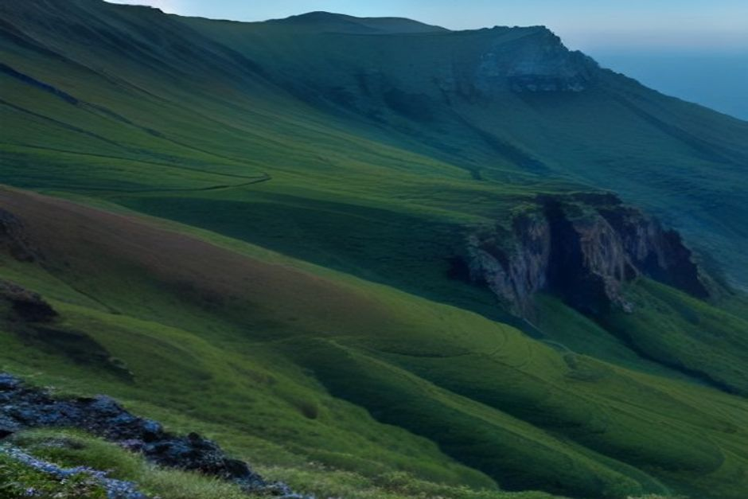
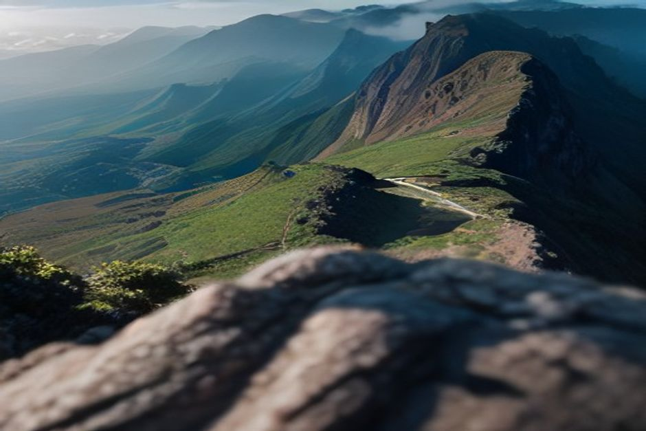

Si ha buscado «pico más alto de Madeira», probablemente le haya salido el Pico do Arieiro. Es el más fotografiado, pero no es el más alto: ese es el Pico Ruivo, con 1.862 metros. Aquí encontrará la altura exacta, las dos formas de llegar a la cumbre, la reserva obligatoria y qué esperar de la montaña.
Altura del Pico Ruivo: 1.862 metros, el punto más alto de Madeira
El Pico Ruivo mide 1.862 metros y es la montaña más alta de Madeira. Le sigue el Pico das Torres, con 1.851 m, y en tercer lugar queda el Pico do Arieiro, con 1.818 m.
La confusión tiene explicación. Al Arieiro se llega en coche, hay aparcamiento y está en todas las guías, así que mucha gente da por hecho que es la cima de la isla. Al Pico Ruivo no llega ninguna carretera. Todos los caminos hasta la cumbre se hacen a pie, y eso se nota: suele sentirse más silencioso y más salvaje.

Pico Ruivo o Pico do Arieiro: cuál le conviene
Depende de lo que busque. Con una sola frase: el Arieiro es la opción cómoda para ver la montaña, y el Pico Ruivo es la que hay que caminar para pisar la cima de verdad.
- Pico Ruivo (1.862 m): solo a pie. Por el camino corto desde Achada do Teixeira es más fácil de lo que muchos esperan.
- Pico do Arieiro (1.818 m): acceso por carretera y aparcamiento, famoso por el amanecer. Es el punto de partida del sendero de cresta hacia el Pico Ruivo.
Si le queda tiempo, ambas cosas se pueden unir en el mismo recorrido, pero ya no es un paseo: se lo explicamos más abajo.
La subida fácil: PR1.2 desde Achada do Teixeira
Es la ruta que recomendamos a quien llega por primera vez, a familias y a quien no tiene un día entero. El sendero PR1.2, la Vereda do Pico Ruivo, sale de Achada do Teixeira, una zona de aparcamiento a la que se llega en coche. Cerca hay una roca volcánica a la que aquí llaman «Homem em Pé» (el Hombre de Pie).
Son 2,8 km hasta la cumbre, es decir, 5,6 km entre ida y vuelta. El camino está bien pavimentado y la subida es constante pero llevadera: cuente con una hora y media en cada sentido. Está catalogado como de dificultad moderada, no difícil.
Con zapatillas cómodas y una chaqueta ligera basta. Eso sí, en la cima hará más frío del que sugiere la costa, así que no la deje en el coche.
El sendero de cresta PR1 desde el Arieiro: otra historia
El PR1, la Vereda do Areeiro, une el Pico do Arieiro con el Pico Ruivo por unos 6 km de cresta volcánica expuesta. Son aproximadamente tres horas solo de ida. A ambos lados hay caídas pronunciadas, y en varios tramos hay escaleras y barandillas ancladas en la roca.
Además atraviesa cinco túneles sin iluminación excavados en toba volcánica, por lo que necesita una linterna frontal. Se le considera una de las rutas de cresta más espectaculares de Europa y también una de las más serias de la isla. No exige técnica de escalada, pero tampoco es un paseo cualquiera. Si tiene vértigo o poca costumbre de montaña, quédese con el PR1.2.
Reservar el Pico Ruivo en 2026: SIMplifica y código QR
Es obligatorio en las dos rutas. Desde que los senderos reabrieron en la primavera de 2026, tras un cierre por un incendio forestal, el acceso al PR1 y al PR1.2 se gestiona con el sistema de reserva en línea SIMplifica: se elige una franja horaria y se paga una pequeña tasa.
- Tasa: unos 4,50 €, o alrededor de 3 € si reserva a través de un operador autorizado.
- Los residentes en Madeira y los menores de 12 años no pagan la tasa, pero también tienen que registrar su franja.
- Los guardas forestales comprueban un código QR al inicio del sendero.
Reserve con uno o dos días de antelación y no se presente esperando encontrar hueco. Lleve la confirmación en el móvil, y mejor aún descargada, porque en la montaña no siempre hay cobertura.
Cuándo ir: por la mañana, antes de que se cubra
Lo mejor es salir temprano. Las nubes tienden a acumularse a lo largo del día, y el efecto de «mar de nubes» bajo los picos se ve con más nitidez antes de media mañana. No se puede prometer, claro: algunos días la cima amanece cubierta y otros regala una vista limpia.
La temperatura es lo que más sorprende. A 1.862 metros hace entre 10 y 15 °C menos que en Funchal, al nivel del mar, y el viento puede arreciar rápido y casi sin aviso. Una mañana de playa en la costa no dice nada de lo que le espera arriba.
Qué llevar en la mochila
- Ropa de abrigo por capas, también en verano.
- Calzado resistente, sobre todo para el PR1.
- Linterna frontal si hace la cresta, por los túneles.
- Agua y comida: no cuente con comprar nada en la montaña.
- La confirmación de SIMplifica.
¿Se puede comer o dormir en el Pico Ruivo?
No hay restaurante ni cafetería. Justo debajo de la cumbre está la Casa de Abrigo do Pico Ruivo, que funciona como refugio de montaña. Sirve de resguardo si el tiempo cambia, pero no es un sitio donde comprar comida o agua. Hay otra casa de refugio en el inicio del sendero, en Achada do Teixeira.
Una vez en el camino no hay servicios de ningún tipo, así que lleve todo lo que necesite.
La otra mitad del día: Madeira desde el agua
Una mañana en la montaña pide una tarde sin esfuerzo. Madeira se entiende mejor viéndola desde sus dos extremos: arriba, la columna vertebral volcánica de la isla; abajo, la costa que la mayoría de los senderistas no llega a ver.
En Chifbay hacemos salidas privadas en barco desde la Marina do Funchal, pantalán C. El barco es solo para su grupo, hasta 5 personas, con dos patrones de Madeira con licencia. La excursión de día sale a las 10:00 o a las 14:00 y pasa por Câmara de Lobos y Cabo Girão, con su acantilado de 580 metros que se levanta directo del Atlántico. Después hay baño y tablas de paddle en Fajã dos Padres. Son 2 h 30 hasta Ribeira Brava por 500 €, o 3 h hasta Ponta do Sol por 600 €.
Si prefiere algo más corto, la salida al atardecer sale 1 h 15 antes de la puesta de sol, durante todo el año. Dura 2 horas hasta Cabo Girão por 400 €, o 2 h 30 hasta Ribeira Brava por 500 €, sin parada para el baño. Los precios son por el barco entero, nunca por persona. A bordo hay comida y bebida, y le entregamos un vídeo en 360° con Insta360, imágenes de dron si el tiempo lo permite y fotos hechas con una cámara de verdad. La cancelación es gratuita hasta 24 horas antes.
Para más detalles prácticos, puede consultar la información práctica.

Un plan sencillo para un día en Madeira
Reserve la franja de SIMplifica a primera hora, suba por el PR1.2 y esté de vuelta en Achada do Teixeira antes de mediodía. Coma algo tranquilo y reserve la excursión de las 14:00 desde Funchal. Verá la isla desde dos alturas muy distintas en el mismo día. Si el cuerpo pide descanso, el atardecer en barco es una alternativa más suave.
Sea cual sea la ruta, el Pico Ruivo premia un poco de planificación: reserve su franja, vístase para la altura y estará en la verdadera cima de una isla que casi todos conocen solo desde su tercer pico.